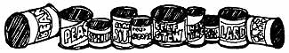
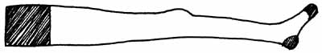
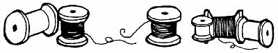
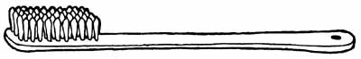

Back in the 50's, a gal named Joan Ranson Shortney wrote a book, How to Live on Nothing, that sums up more of what eventually became MOTHER's use-it-up-wear-it-out-make-it-do-or-do-without philosophy than anything else I've ever seen. Needless to say, I was one of the first purchasers of that book and I used my copy as a reference for years before founding MOTHER. Here's a live-better-for-less selection from Joan's book.-JS.
From How to Live on Nothing by Joan Ranson Shortney. Published by Pocket Books, a division of Simon & Schuster, Inc. Copyright 0 1961 and 1971 by Joan Ranson Shortney. Reprinted by permission of the author.
How incredibly wealthy our country is, even in times of economic recession and depression! Every day mountains of paper and wood are burned as waste. The countryside is Uttered with enough tin cans to circle the globe-tons of metal going to waste while they destroy the scenery's beauty.
In his admirably written Yankee Hobo in the Orient (originally published by Doubleday under the title Why Japan Was Strong, in revised edition, republished by the author, Frying Pan Creek, Florence, Oregon) John Patric tells of the Oriental use of what to us are waste materials. It will make all budgeteers feel rich to read Mr. Patric's account of how a cotton coat was sold over and over in its evolution from rough new coat to second-hand coat to shabby coat to padding rags for another shabby coat to patches for a junk sail to padding for quilting and finally to postage-stamp-size pieces of rotten cloth that made the basis of a hat.
Thus, when you use something ordinarily thrown away you can be extra proud-proud that you've avoided spending money you cannot spare and proud that you've done the national economy a service by cutting down on our national vice-waste.
Below you will find a list of everyday objects that are usually discarded and some uses to which they can be put, either to make useful objects or to make life a bit easier. If you can add your own inventions in saving and using to this fist, award yourself a medal for Chief Saver in the League of Anti-Waste.
1. BABYS GATE or outgrown fold up, playpen for garden trellis.
2. BAGS. Paper sacks have many uses besides their conventional ones. Fasten one on the back of your front automobile seat so that you can use it as a wastepaper basket and the children won't be tempted to be litterbugs. Fasten another to the side of a mattress if someone is sick in bed with a cold, etc., so that cleansing tissues can be thrown in and discarded without scattering germs. Use an extra-large paper bag to shake your cloth vacuum-cleaner bag into for easy, quick cleaning. After you've rolled a rug and covered it with paper, cover each end with a heavy paper bag to keep out the dust.
3. BLACKBOARD CHALK. Leftover ends of chalk will give metals a shine when rubbed on. Also, store these ends with costume jewelry to keep it from tarnishing.
4. BLACKBOARD CHALK to mend nail holes in plaster walls. Simply drive the piece into the hole and cut off flush with the wall.
5. BLANKET. If a fine soft one, salvage good sections and bind for baby blankets. If a coarse blanket, use it to cover open springs to save wear of springs on sheets and mattress.
6. BOTTLES make Bohemian candleholders if you use the narrow-necked variety, such as wine and brandy bottles, etc. Let the wax from candles drip over the bottle, burning different-colored candles in succession so that there is a multicolored wax pattern on the bottle. This is one of the features of the decor of a city cellar restaurant.
7. BOTTLE FOR ROLLING PIN. Use a long, slender bottle with a gently sloping neck.
8. BOTTLE CAP as dent patcher. Have you a dent in your wooden table? Cover the dented place with a wet cloth. Put a metal bottle cap over the dent with the fluted edge facing upward not down toward the table. Press the center of the cap lightly with the tip of a hot iron.
9. BOTTLE CAP a s repair "washer" for plumber's helper (plunger). If the plunger end, that is, the rubber, keeps slipping off your plumber's helper, make it fit onto the handle tighter by nailing a metal bottle cap onto the end of the handle and forcing the cap into the rubber plunger.
10. BOTTLE CAPS make a shoe scraper for outside the door. Use six rows of eight or some similar number on an 8- by 12-inch board, nailing the tops on with the sharp side (fluted edges) facing upward. This is a project any child over ten can safely make for a Christmas present. These bottle tops handily remove mud from shoe soles.
11. BUTTONS. If you have only two attractive buttons, make them into a pair of earrings. If you have four attractive buttons, make them into a pair of cufflinks, chain-stitching a cord between each pair.
12. CALENDAR PICTURES. Enamel shabby wastebaskets and paste on calendar pictures for new decor. (Scenic ads and posters can also he used.) Shellac over the pictures for longer wearing and washability.
13. CANDLE STUBS. For corking bottles when you've lost the cork, soften a candle stub so that it fits the neck of the bottle. Candle stubs also make excellent fire starters. Candle stubs can be saved and melted together and made into new candles, using old bottles or milk cartons as molds. Also, candle stubs can be melted and poured directly onto paint in a half-used can of paint so that the paint will remain airtight and soft.
14. CAN KEYS. Save an occasional key from coffee or sardine cans, as you're bound, sooner or later, to come across one that has no key. Can keys also provide an economical way to use toothpaste, winding from the bottom of the tube!
15. CANS. In the summertime in the country we use small cans, stripped of their paper labels, as individual receptacles for each kitchen-table leg to keep tiny ants from climbing up. Otherwise, in spite of clean floors, they mysteriously get onto the kitchen table. When baking or roasting several dishes, many pies, etc., in a small oven, provide more space by raising some of the levels by means of clean, empty tin cans under some of the dishes or pies. In small paint jobs, tin cans are useful for mixing.
16. CARPET SCRAPS. These can be new pieces left over from wall-to-wall carpeting or worn throw rugs with good pieces in them, etc. They make strong tote bags for informal occasions or shopping bags if stitched firmly and fastened to wooden dowels for top to which handles can be attached.
17. CARTONS (cardboard-heavy). Besides their conventional uses they can be makeshift tables for children and bed tray for the invalid.
18. CHEESEBOX. An oblong wooden one or a small oblong strong cardboard one makes a cheesebox pull toy for small children, either a truck body or with cotton-spool chimney a train or with cotton-spool smokestacks a ship. Enamel it an appropriate color. Cheeseboxes sanded and enameled or gilded make attractive containers, also seed flats and small plant boxes.
19. CHENILLE BEDSPREAD. When worn, enough may be salvaged to make a beach shawl, beach coat, bed jacket, scuff slippers, etc., and the scraps used to replace the worn-out material on a floor-wax applicator.
20. CHRISTMAS CARDS. In addition to the many ways we've already discussed to use old Christmas cards, you can make hexagonal containers for odds and ends using the picture sides of 14 cards. Make each panel of two cards with pictures facing out and in, so that the container is pretty from inside and out, and do the same with the base. Bind each panel to the next with embroidery thread or yarn using a blanket stitch and blanket-stitch the top. For a hexagonal lamp shade, use parchment cards and the same technique, omitting the base cards.
21. CLEANERS' BAGS can be re-used for storing clothes as we've discussed. Or used as a dust cover for the ironing board. Or use doubled as wrapping paper. Or seal the narrow end and store one blanket in each bag, sealing the open end after you add moth flakes.
22. COAT HANGERS have so many uses that people are inspired to write articles on them! We do not recommend wire ones, however, for fences or trellises, which can be slightly ridiculous, especially when they start to rust! But they are adaptable enough so that they can serve as trouser hangers if you pinch the ends together and run each end through a belt strap, or as skirt hangers if you pinch the ends and curve the top wire upward at each end and hang the skirt by safety pins. And there's nothing like a straightened coat hanger for cleaning a vacuum-cleaner tube when you have something wedged in that tube and have no stiff wire! And in a pinch you can use a discarded icebox- or refrigerator shelf or cake rack lashed to two coat hangers (one at each end) for a hanging rack for drying stockings, socks, and other small laundry. Then hang your hangers on the shower rod or even the closet rod-handy in apartments where space is limited.
23. COOKY SHEET, bread tin painted and decorated, or rubber mat. Any one of these can be used as a waterproof rubbers-and-overshoes parker in the hallway.
24. CORKS. A used cork makes a handy pin holder for corsage pins, hatpins, or just plain pins. If it has a top, as in a champagne cork, it's self-sufficient, but if it has no top, anchor it in a candlestick.
25. CORKS. A used cork should be kept near the kitchen sink in a jigger glass or eggcup so that it is handy for scouring cutlery, etc. Used with scouring powder, it is effective and saves wear and tear on your dishcloth.
26. DOORKNOB. If you have no pestle for pulverizing pills and bruising seeds, mashing herbs, etc., use a doorknob in a wooden salad bowl.
27. EGG CARTONS are partitioned storage boxes in the children's sock drawer or for small Christmas-tree balls, etc.
28. ENVELOPES, either the ones addressed to you or the ones enclosed as postage reply envelopes with ads or the ones enclosed with wedding invitations, etc., should be re-used. Open addressed envelopes carefully. Turn them inside out and reglue the seams.
29. EXPRESS WAGON, when not being used or outgrown by Junior, makes a timesaving cleaning cart if you pile dust rags, polishes, pails, etc., onto it and wheel it from room to room.
30. FELT HATS. Bright-colored but dated hats of felt may be made into attractive gifts and accessories. They also make attractive and useful pot holders, iron holders, needlecases, or, cut into narrow strips, can be crocheted or braided into chair-seat pads.
31. FELT RATS. Even black, faded, or dingy felt hats make comfortable inner soles. Use a worn or loose inner sole as a pattern; replace it with the felt inner sole cemented in.
32. FELT HATS. Men's stiffer felts make useful roll-up cases for silver or small tools, drills, etc. Make a case out of two pieces of the felt cut into strips and joined on three sides, the top piece narrower than the bottom piece. Stitch down into narrow, individual pockets. Mothproof. Put in silver or small tools.
33. FRUIT CRATES. These are versatile and make many wooden objects if you're a carpenter. If you're not handy you can stiff use them. Use the sectioned ones upended for shelved cabinets for canned goods or, under the sink for cleaning materials, or for temporary emergency cabinets handy to any corner. Hide the contents with a drawstring curtain fastened across the fruit-crate cabinet front on a spring curtain rod anchored at each end with a small nail or cup hook. Or use your shelved fruit crate for a small bookcase, varnish-staining it and pasting a montage of souvenir menus, dance programs, mementos you've collected, etc., onto the outside-and then shellacking all pictures for a conversation-piece item of furniture for your books.
34. FRUIT CRATES. The flat, solid kind can be used for an extra standing shelf. Knock off the top and two sides of the crate, leaving the bottom and two sides. Make these sides firmer by driving in some of the nags taken out of the subtracted sides. Stand your shelf like a two-legged stool with the bottom uppermost. For a nice finish, sand and paint it. Keep shoes under and on top of it on closet floor or use it for small objects on top of another shelf.
35. ICE-CREAM STICKS AND WOODEN SPOONS. Both are flat and of wood and make good markers for rows of garden seeds or plants. Print names with crayon.
36. IRONING BOARD. Perhaps you have an extra old one. Strip it of padding and paint or enamel it. Then decorate it with stencils or with Swedish or Pennsylvania-Dutch folk designs and use it for a snack table. Or lower it for a typewriter or sewing table. Covered with a removable sheet of plywood, it can serve as a cutting or paste-up table for sewing or wallpaper.
37. LEATHER JACKETS OR SLEEVES will yield enough good parts to make leather collars to replace worn cloth collars on men's jackets and sport coats and children's play suits as well as leather patches on the knees and elbows of children's ski suits and on the elbows of men's tweed jackets. Worn scraps make polishing skins for windows, dusting, car wash.
38. LEATHER SWEATBANDS inside men's hats can be used for small patch jobs, such as slipper soles, etc.
39. LICENSE PLATES (old ones) can shield the wall when you're painting woodwork. They also make ratproof patches in barns and outbuildings on the farm.
40. LIGHT BULB, used, makes a good darning egg.
41. LINT from the automatic drier can be used for stuffing stuffed toys.
42. LIPSTICK CASE when empty will make a traveling sewing kit for needles, pins, hooks and eyes. Or use them for bobby pins and hairpins. Sometimes they make funnels on models, or a pipe or water tank in a dollhouse.
43. LUMBER ENDS can be made into hanging shelves suspended with plastic clothesline knitted underneath the shelves.
44. MILK CARTONS, like coat hangers, have many uses. Washed thoroughly, they can be used for foods kept a short time in the freezing compartment of the refrigerator; cut lengthwise, they can be used to hold odoriferous foods, such as fish, in the refrigerator to save washing and deodorizing regular containers. Cut lengthwise, they can be used as seed flats. It's easy to transplant young plants when ready for the garden. Cut out the bottom of a carton and place the plants and the sides of the carton intact in the soil. Sow thinly for this. Cut crosswise, cartons make good collars for surrounding tomato plants to keep away cutworms.
45. MOSQUITO-NETTING SCRAPS. Make darn bases in mending heavy materials.
46. NAIL POLISH, thickened. Coat threads of loose drawer knobs and handles. Tighten to dry.
47. NAIL-POLISH BRUSH AND BOTTLE. Clean thoroughly with lacquer thinner; then cover the brush with cotton, flannel or felt to make a dauber. Fill a bottle with water and use the set for sealing envelopes so that you don't have to lick glue.
48. NEWSPAPER. As an insulating agent. Wrap frozen foods in several thicknesses of newspaper to keep them frozen while you're defrosting the refrigerator. And several thicknesses of newspaper placed over the cog spring under your mattress will help insulate you against the cold in winter.
49. NEWSPAPER. As a cleaning aid. Wet newspaper wads to swab, and dry ones to polish, will clean your windows if you have nothing better on hand. Damp newspaper under radiators will catch and fasten flying dust as you brush them. Damp newspaper will catch vacuum-cleaner dirt if yours is the kind that won't fit into a large paper bag. Newspaper spread over the top shelf of your refrigerator, under the defrosting tray, will save mopping up, but keep the paper there only while you're defrosting the box-otherwise the newspaper will insulate and shut off your foods from the cold.
50. NEWSPAPER. As a protecting agent. Wrap it wet around stems of gift bouquets that must travel, to keep them fresh, or around plant roots, to keep them protected against air. Envelop the wet bundle in a large plastic vegetable bag to keep your car and yourself dry. Use 24 double pages of newspaper inside a muslin cover to substitute for a rubber sheet for a disposable bed pad on a patient's or child's bed.
51. NYLONS when worn out have a variety of uses. They can be cut into strips for plant ties; opened up and made into snood hair nets while you're dusting or when you want to keep pin curls in place; cut off and hemmed for house socks or peds or attached to a wire coat hanger for a children's fish net.
52. PAINT SOLIDS left over in the bottom of a paint can make putty when mixed with equal parts of whiting.
53. PAPER PLATES, even used ones, will anchor things. Invert them and cut a hole in the center and use as a stand for the drink in a paper cup. Or keep small cans of paint from tipping by gluing them to old paper plates.
54. PAPER-TOWEL CYLINDERS and toilet-paper rolls have many uses, some of which we've indicated. Use them, also, cut up into rounds to keep cutworms away from tiny plants. Use them as map tubes.
55. PERCOLATOR. Perhaps you've graduated to a drip pot or silex. Because they have handles, percolators make handy paint cans or cans for heating paraffin in when making jelly (can be poured from spout), or handy containers for drippings. In the latter case you might try using the top basket as a strainer.
56. PILL-BOTTLE COTTON, stuffed in the necks of the bottles to keep the pills from rattling, makes swabs and disposable powder puffs. A bit wound around toothpick will prove handy for a touch-up paint job. Keep in a covered jar for quick reference.
57. PLASTIC SQUEEZE BOTTLES that sunburn lotions, deodorants, and some foods come in can be re-used after being thoroughly cleaned. Fill one with water and take it along in your car glove compartment to use for handy window squirt cleaner on dusty days.
58. PLASTIC TABLECLOTHS when worn can be cut down to make ironing-board dust covers, plastic curtains for windows, a weatherproof cover for the porch swing.
59. PLASTIC VEGETABLE BAGS have many uses. For storage of nylons, gloves, etc., in bureau drawers or shoe bags in packing. To keep vegetables fresh in the refrigerator. They make good dust protectors of seldom used pans or kitchen tools, such as a meat grinder. In a pinch, those without air holes do as plastic mitts.
60. PRETZEL TINS make mothproof containers for woolens.
61. RAINCOAT. Salvage good parts to make a beach bag or traveling bag for diapers.
62. RANCID GREASE or accumulated drippings or a combination makes laundry soap:
Collect 5 pounds grease to make 2 quarts melted fat strained. Strain fat through cheesecloth and measure after straining. While grease cools, pour 1 1-pound can lye into I quart water. Use stone jar or earthenware vessel for this and do pouring and stirring very carefully with stick or wooden spoon, never a metal one. Be careful not to splash lye on anything, including yourself, as it is a powerful alkali. When thoroughly dissolved and cooled, pour lye slowly over cooled melted grease, which must be in earthenware or enamel container. Stir until lye and grease are thoroughly combined. Add 1/2 cupful household ammonia and 2 tablespoonfuls borax dissolved in 1/2 cupful water. Stir until thickened, that is, until about consistency of honey or thin pudding. Pour mixture into granite or earthenware mold to harden for several hours. Cut the square into cakes before it becomes quite hard. Store the soap cakes in a dry place to harden for about 6 weeks. The older the soap, the longer it will last, as it becomes harder with age.
There are many recipes for soap, of which this is one of the easiest to make. By using soap-tree bark and soda and boiling water you can make a finer, whiter soap which can be tinted with vegetable coloring and scented with your favorite toilet water for bathroom use.
63. RAZOR BLADES. Old single-edge blades are useful for outline cutting and sewing jobs. They also remove hardened paint on windowpanes. Store them in flat metal aspirin boxes or small slide-out matchboxes.
64. RUBBER FRUIT-JAR RINGS. Cemented under ash trays, lamps, vases, they protect furniture from scratch marks. A group of them formed into a circle and overcast with buttonhole stitching and joined together will make a hot pad. Work crocket around the stitching-a project for children to make as gifts.
65. RUBBER SCRAPS, old hot-water bottles, inner tubes, worn out waders, etc. Sew pieces under comers of throw rugs to anchor them. Strips can be attached to overalls as kneeling pads for gardeners. Use a strip over the edge of a porcelain kitchen table to protect the tabletop when using a meat grinder.
66. SALT SHAKERS. For home-grown seeds. To sow, just shake out on the soil.
67. SHADE ROLLER. Remove used window shade and attach oilcloth to match the kitchen tablecloth or blend with linoleum or curtains. Or use in the bathroom to match the shower curtain. Or use with a wallpaper shade to match or blend with the walls.
68. SHAVING BRUSH. When worn or supplanted by an electric razor it should be kept for fine dusting on carved furniture, tops of old books, etc.
69. SHUTTERS you've discarded or picked up for a song make good room dividers as doors or made into a screen or doors for under the sink cabinet.
70. SOCK FEET. If intact with worn sock tops, cut off the feet and use them for traveling individual shoe bags to keep shoes shiny and clothes clean.
71. SOCK TOPS. If the feet are worn out, use the tops cut in long strips around and around for hooked rugs. Also, this stretchable material makes good dusters.
72. SPICE BOXES. Keep intact with sprinkle tops for spring seed distribution. Or use for handy, neat containers for tacks and small tools.
73. SPLIT CLOTHESPINS. Use as wedges for rattling windows.
74. SPOOLS. Wooden thread spools come in various sizes and are ideal for small children's wooden toys, as funnels on ships, smokestacks on trains, wheels on pull toys, and are versatile for dollhouse furniture, as table bases, etc. Type. writer-ribbon spools make wheels for slightly larger carts, etc.
75. SPOOLS. A pair of spools tacked close together on the wall will make a broom or tennis-racket holder.
76. STRING. Of course you save it, but do you use it for knitted dishcloths and duster mitts? The dishcloths can be knitted with fringed ends of strings for the palm to gather dust, plain knit for the back.
77. SUITCASE. A shabby one with a broken handle can still be used if you paint or shine it up and put it on casters. Use it as a storage chest for under the bed.
78. TABLECLOTH, paper. That paper tablecloth still has sections untouched by fruit juice or ice cream after the party. Cut the good sections into napkins with plain or pinking shears.
79. TABLECLOTHS. If a threadbare tablecloth has holes, perhaps you can patch it with a matching napkin. If it has a large thin section, cut out the entire section and join the good parts to make a smaller luncheon cloth or slice into place mats. Starching limp old cloths will give them a snappier appearance and new life.
80. TEA. Cold tea, having it in tannic acid, is soothing for sunburn. It also was recommended to me by a doctor as a soothing poultice for tired eyes. Dip absorbent cotton (see PILL-BOTTLE COTTON) into strong cold tea, he down, and put these on closed eyelids for 15 minutes. Slightly squeezedout tea bags can be substituted. Tea leaves also have a reputation as a house-plant fertilizer. When starching dark materials, strong tea added to a starch solution will help keep away the white film appearing on the cloth surface. And a cloth dipped into tea is recommended by some for wiping varnished surfaces.
81. TEAPOT. Have you a cracked teapot that won't hold tea? Slip a tumbler into it. and use it for a pretty flower container.
82. TIES. Faded or outworn knitted ties make easy-to-slip-on covers for wooden dress hangers. And if wide ties have been discarded for the newer narrow ones, use the old-fashioned wide tie for a smart umbrella cover. All kinds of ties can be used in rag rugs and as gay quilt patches.
83. TONGUE DEPRESSORS or other small flat sticks (ice-cream sticks, etc.) make good splints for broken or split tool handles when wound around with electrician's tape.
84. TOOTHBRUSH. A clean old toothbrush is the cleaner par excellence. Use it to clean typewriter keys and to get the dust and lint out of your sewing-machine parts. Use a soft one to scrub the raised pattern on your silverware. Use one in combination with suds and ammonia to give a sparkle to cut glass. Use it to dust hard-to-get-at comers. And it will also aid you in cleaning waffle irons and stove burners and in hard-to-get-at crevices. It will be most useful in getting the mud off the edges of boots and shoes.
85. TOOTHPASTE TUBE. If this is a lead tube (not plastic) it will substitute as solder.
86. TOWELS. Put an old towel into the bottom of the dishpan before you wash delicate glassware-and put another onto the drainboard before you put the glasses on that. If towels are merely frayed around the edge, you can rebind or overcast, but if worn in the center, cut up the towels and bind or hem the good portions for washcloths, pot holders, dishcloths, etc. Or sew into mitt form with a pocket for soap chips and use in the bathroom or shower. Or make a bag for a hotwater bottle.
87. TREADLE-SEWING-MACHINE BASE. Cover the hole into which the machine used to fit and paint the entire thing white or a color to blend with the room for a useful sideboard. Or dispose of the wooden parts and keep the iron sides for garden, shop, or patio furniture, getting boards for conversion into a bench or table.
88. TYPEWRITER-RIBBON BOXES. These make easily decaled or painted attractive containers for stamps, snaps pins, sewing materials, paper clips, thumbtacks, small tools: etc.
89. UMBRELLA. An old umbrella can be re-covered or made into a sunshade with gay material for garden or beach. But if you want to do neither of these, consider its frame as a Christmas chandelier with paint and decoration. When Christmas is over, strip off decorations and use the smooth enameled frame for an extra clothes-rack drier for small garments.
90. VENETIAN-BLIND SLATS make an even small picket fence or can be easily converted into garden markers. They make good stirring sticks for dye or paint and can be held against an edge to give you a straight edge while painting and protect the surface that you are not painting.
91. WAX, whether from candle stubs, leftover paraffin, or scraped off milk cartons, will seal a small crack in a vase if you pour it in melted. Then be sure the water is cold when you use the vase.
92. WAXED CONTAINERS that have held cottage cheese, sour cream, yoghurt, etc., make good disposable refrigerator dishes for small odoriferous foods that need a container with a lid freezing containers for leftovers or small quantities, disposable paint pots for small jobs.
93. WAXED CONTAINERS make floating toys for children's bathtub fun.
94. WAX-PAPER LININGS to cereal boxes are extra heavy and very useful both for sandwich wrapping and cake-pan lining. Good for a neat job on pie dough, too. Simply use two sheets-one for under the dough and one for over it-and roll out your dough and dispose of the wax paper. Saves mess and time.
95. WAX-PAPER LININGS are a sewing aid when you're making your own shower curtains, plastic window curtains, etc. Put wax paper over the seam and the sewing-machine needle won't stick to the plastic. Tear off the wax paper when through.
96. WEEDS, PODS, GRASSES, ETC. Save attractive shapes and textures for winter bouquets. You can spray twigs white with flat paint and a vacuum-cleaner attachment. (I have gilded a bird's nest with a brush!) Bluing, ink, and water paint all are effective sprays on weeds. And pods take to bright enamels. Some flowers dry their natural colors if you hang them carefully in the attic and pick them dry in the first place.
97. WHITE CARDBOARD, such as is used to fill blouses and shirts in gift boxes, etc., makes the base for a large-sized card (the type that takes a 6-cent stamp). Paste a scenic picture on one side-cut from a calendar, ad, etc.-and rule off half the other side for message, half for address.
98. WINDOW SHADE WITH ROLLER. Paint it with blackboard paint and give the children a blackboard that rolls up when not in use.
99. WINDOW SHADE WITH ROLLER. Attach it to a wall handy to your ironing board and sewing machine, then pull it out straight and attach it to the board or machine when ironing a slip cover, or to the machine when sewing a large piece of material, to keep the material from touching the floor.
100. WINDOW SHADE WITHOUT ROLLER. Paint with canvas paint and cover the seat of a porch folding chair with it. Or keep it in the trunk of the car for a drop cloth when you have to change that flat!
You won't be able to use all of these tips but you should find herein three or four new uses for discards.
And don't forget that resort of the horse trader-swapping. Swapping is fun even if you have money. It's the lifeblood of many a wish-cometrue if you don't. I've swapped a heap of old books for a crystal candlestick, dishes I didn't need for canned fruit that I did, and knowledge for many a meal. Knowledge can always be swapped-if not for money, then for something money will buy. Sometimes what you can swap will bring you more than money will bring you. I sent some shoes overseas after World War II. I got a letter back that they didn't fit. I wrote, "Swap them for something that will fit." So my bombedout relatives swapped them for needed windowpanes. Of such is living on nothing!
You need access to a stove to eat most cheaply, but there are ways to cut the cost of eating even if you don't keep house. Canned heat (Sterno) was a help to us for a spell in an Indianapolis furnished room. I boded the breakfast eggs and tea water simultaneously, washing the eggs carefully, putting them in cold water, and bringing it to a boil. When the eggs were at length soft-boiled, the tea water was ready. In addition, our day's menus included whole-grain bread, margarine, cheese, delicatessen coleslaw, cold cuts, milk, fresh fruit, and salad vegetables. Every night, under cover of darkness, Bill sneaked the shells, tea leaves, etc., to the landlady's garbage can.
We did better than that with a hot plate in a New York City furnished room. Because we weren't paying for the fuel, we could make longcooking stews, fricasseed chicken, Spanish rice.
Show folk on tour use the working surface of an electric iron turned upside down with the handle anchored firmly. Many a wardrobe trunk is a traveling delicatessen, and actors' hotel rooms become intimate dining nooks. As the management frowns on such practices, meals are made and shared surreptitiously. If you follow suit, remember to make sure that current is available and of the kind your gadget is made for. An A.C. hot plate will blow the fuses on D.C. and vice versa.
In my many periods of living on nothing, I have never squandered pennies on eating breakfast in a restaurant. It is the most expensive meal to buy out, considering what you get. Twenty cents will purchase only rolls and coffee, coffee and oatmeal, or, in a cheaper place in cheaper times, coffee and pancakes. This is not a good or balanced enough meal to start a day. The most frequent food mistake people make is starting a day with a poor meal. A good breakfast gives a person a feeling of security and this is doubly important when you're short of money. If breakfast is adequate you won't start the day depressed due to faulty nutrition and you'll be better able to cope with the day's problems.
It's possible to live on only one meal a day, although the prospect sounds a bit grim. My grandmother had a collegestudent furnace man who contributed his services for a big breakfast. And did that man eat! When he was graduated he confessed to Grandmother that her breakfasts had been his only meals!
If you have no means of cooking, you can still have an adequate breakfast. In many parts of Europe, cheese is eaten for the first meal of the day. A few oranges will keep in a cool comer of the room or on a shaded window sill, and instant coffee will mix in cold water. So will powdered skim milk. (Use skim rather than whole powdered milk, which goes rancid unless refrigerated.) Cold food is as nourishing as hot, although a hot cup of something satisfies me more even in hot weather.
If you feel the same way, and boiling water is not available, hot tap water will dissolve instant coffee. If you have a radiator or heater in your room, you might accomplish a soft-boiled. egg. Run the tap water as hot as possible and use the smallest container you can find-a tin can will do. Put your roomtemperature egg into the hot water and place it on the hottest part of the radiator and meanwhile take your bath, get dressed, eat your orange, drink your first glass of coffee. If the heater has cooperated your egg will be soft-boded. If it turns out to be raw, mix the yolk in water and dry skim milk and drink an eggnog. Raw proteins are better for you than cooked anyway! If you have no refrigerator you can purchase your eggs singly. Though cheaper when bought by the dozen, even a single egg purchased from the grocery is cheaper than an egg bought in a restaurant.
Buy your bread at a restaurant outlet or day-old counters of bakeries or groceries. We've bought English muffins for a penny apiece. Since they had to be toasted, it didn't matter that they were stale if they were under a week old. Older than a week they were brick hard and had to be run through the meat grinder for use as bread crumbs. Dayold bread is gener. ally a bigger bargain than week-old, even though the former is reduced in price only a third in contrast to week-old's twothird reduction. This is not only because of increasing danger of mold and spoilage but also because you must toast the very stale bread to eat it and toasting destroys some of the B vitamin, thiamine, how much depending on the length of the toasting time. When you cannot afford to pay for vitamin supplements you must be constantly alert to get the maximum supply from your food. Also, read bread labels to get your money's worth. Wheat or wheaten bread is a mixture of wheat and white flour, Whole-wheat bread, made only from the whole-grain flour, is so labeled. Wheat germ, the concentrated embryo of the wheat, the source of the life-giving vitamins and minerals, is a great nutritional bargain, and bread containing wheat germ may very well be on the quick-sale counter, be. cause the oil in wheat germ makes it perishable as milk and meat are perishable. Keep it in the refrigerator or coolest part of your room. Ibis is especially important in hot weather.
If you have enough money to eat one meal out, get to the restaurant before the evening menu arrives. Luncheon menus are priced lower for identical dishes. If you're eating all your meals alfresco, tuck a sandwich in your pocket or purse. I've munched happily in palm-filled lobbies, ladies' lounges, station waiting rooms, and, weather permitting, park benches or spots near the water. If you're equipped with as much sheer nerve as a friend of mine, you might eat on the town. Hotels carry bulletin boards with notices of meetings, publicity luncheons, cocktail parties. My friend, dressed to the nines and briefed beforehand from newspapers, invented magazine and press connections and marched in with an air of being the day's most welcome guest. Gradually she broadened her acquaintanceship and was invited to accompany members of the press to special events.
Or you might try talking a glamorous meal as a man I know does. A long list of people invite him over to cook their dinner while they supply the ingredients. Or you can read the rest of this chapter and find so many ways of cutting down the food bill that you can convince a friend with a stove and kitchen but similarly limited finances to combine resources and kitchen.
By combining a basic knowledge of nutrition with information on how to get the necessary elements of a balanced diet in their cheapest form, you can cut your food bill from 50 to 75 percent, even if you must eat the daily three in a restaurant.
|
 |
 |
 |
|
 |
|
|